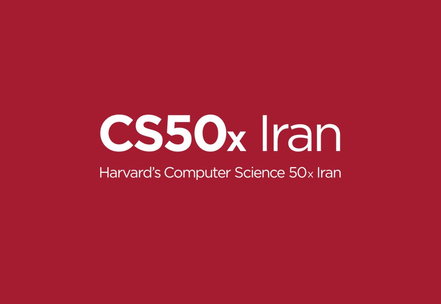

Harvard’ın Efsanevi Bilgisayar Bilimleri Dersi CS50x’in Türkiye’ye Geliş Hikayesi
- Nedir? Kodluyoruz’da temel hedefimiz Türkiye’yi teknoloji alanında dünya çapında bir yetenek merkezi yapmak. Bu yolda önümüzdeki en büyük engellerden birini kaldıracak bir çözüm geliştirdik: Ülkemizin neresinde olursa olsun tüm gençlerin algoritma ve yazılım öğrenmeye ilk adımını atması için CS50x’yi Türkçeleştirdik. CS50x ve David J. Malan’ın Hikayesi:
- CS50x (Computer Science 50 – Bilgisayar Bilimlerine Giriş) dersi, Harvard Üniversitesi’nde 2002 yılında verilmeye başlandığında 100 kişi kursa kayıt oldu. Dersi daha çok bilgisayar mühendisliğinde okuyan öğrenciler tercih ediyordu çünkü öğrenciler bu konuya karşı bir tür korku duyuyordu. Bu durum David J. Malan’ın dersi vermeye başladığı 2007 yılına kadar böyle devam etti. David hocanın ilk amacı bilgisayar bilimlerini herkese sevdirmek oldu. Buna göre kursu yeniden tasarladı, gerçek hayattan örnekler vererek algoritmaların hayatımızın her yerinde olduğunu gösterdi.
- Bu değişimlerle beraber kursa kayıt olan kişilerin sayısı her yıl yükseldi. Üstelik artık her bölümden öğrenci dersi almaya başladı ve kodlamaya ilk adımını attı. 2014 yılında CS50 artık 800 öğrencisiyle Harvard’ın en popüler dersi olmuştu. Bugün liderliğini hala sürdürüyor. Üstelik öğrencilerin %67’si, bilgisayar bilimlerine dair daha önce herhangi bir ders almamış.
- David J. Malan burada durmadı. Derslerini edX üzerinden online ve ücretsiz olarak yayınlayarak tüm dünyaya ulaştırdı. Bugün, milyonlarca öğrencisiyle dünyanın en büyük online derslerinden biri. David hocaya “neden bunu yaptınız?” diye sorduklarında, verdiği cevap her zamanki alçak gönüllüğüyle sadece “çünkü doğru olan şey buydu” oldu.
- Kodluyoruz’u kurduğumuz 2016’dan bu yana 10.000’den fazla gençle tanıştık. Yazılıma adım atmak isteyen gençlerin en büyük iki sorunu hep şuydu: Algoritma temellerinin zayıf olması ve nereden başlayacaklarını bilememeleri.
- Bu sorunlara mükemmel çözümü CS50x getiriyor, çünkü kursun amacı herkesin algoritma bilgisini geliştirmek ve yazılıma ilk adımlarını atmasını sağlamak. Üstelik bunu öyle iyi şekilde yapıyor ki, bu kursu tamamlayabilen birisi rahatlıkla istediği programlama alanına yönelebilir.
- Bunları fark edince kendimize şu soruları sorduk: Bu kursu Türkçe’ye çevirsek ve Türkiye’nin her yerinden gençlere ulaştırsak nasıl olur? Üstelik online ve ücretsiz olarak? Üstelik çalışma gruplarında her yaştan gencin beraber öğrenmesini destekleyerek?
- Bu hayali kurduk ve bugün buradayız: CS50x 2019’u onlarca gönüllünün yardımıyla Türkçeleştirdik.
- Aslında hikâyenin başlangıcı Ivan Primachenko ile tanışmamızdı. Ivan, Ukrayna’nın Coursera’sı olan Prometheus’u kuran girişimci. Bugün 1 milyondan fazla Ukraynalı genç Prometheus sayesinde öğreniyor. Ivan’a, online kurslarla ilgili yaptığım bir araştırmayla ilgili sorular sormak için e-posta göndermiştim ve geri dönüş yapmasıyla bir araya geldik.
- Ivan’ı dinlerken ilham almamak elde değil. Ona Kodluyoruz’u anlattığımda, amaçlarımızın benzerliği ikimizi de heyecanlandırmıştı. Sonra kendimize şunu sorduk: Prometheus’un eğitim modeliyle (online dersler) Kodluyoruz’un modelini (sınıf içi bootcamp’ler) birleştirsek nasıl olur? Çünkü online dersleri tamamlama oranı oldukça düşük, fakat avantajı binlerce gence aynı anda, neredeyse sıfıra yakın marjinal maliyetle ulaşabilmesi. Sınıf içi eğitimlerin avantajı ise öğrencilerin birbirini destekleyerek dersi çok daha yüksek oranlarda tamamlamaları; dezavantaj ise ulaşabildikleri kişi sayısının kısıtlı olması.
- Bu iki modeli birleştirmek, bootcamp’lerin çok daha fazla gence ulaşmasını sağlayabilirdi. Gençlerin dersleri online takip edeceği, ayrıca ayda 2-3 defa bir araya gelip birbirlerini destekleyecekleri çalışma grupları oluşturmaya karar verdik. Bu modeli hayata geçirmek için seçeceğimiz ders çok netti: Harvard’ın efsanevi CS50x kursu. Çünkü bu sayede binlerce gencin bilgisayar bilimlerine en iyi başlangıcı yapmalarını sağlayabilirdik.
- Bu fikri paylaşmak ve kendisinden izin almak için David J. Malan’a yazdık. Kendisi, dünyanın en iyi öğretmenlerinden olduğu kadar en alçak gönüllü insanlarından biri. Hemen bize geri döndü ve fikrimizden ne kadar heyecanlandığını belirtti. Türkiye’nin her yerinden CS50x Fellow’ları seçmeye ve onların yardımıyla çalışma grupları başlatmaya karar verdik. David hoca Türkiye’ye gelip bu gençlerle tanışacağı günleri iple çektiğini söyledi.
- Tabii ki 50 saatlik kursu çevirmek kolay değildi. Amerika’dan Japonya’ya beş ülke ve 17 şehirden 80 gönüllü çeviriler için çalıştı. Onlara nasıl teşekkür edeceğimizi gerçekten bilmiyorum. Soner Canko hayalimize inandı ve dublajı Sessanat’ın yardımıyla yapmamız için Troy aracılığıyla bize destek oldu. Ve bugün, 13 Nisan 2020’de, yani yaklaşık 8 aylık bir emek sonucu derse kayıtları açtık.
- Kursu neden tamamen Türkçeleştirip dublajını yaptığımıza gelince: Çünkü Türkiye’nin neresinde olursa olsun yazılıma ilk adımını atmak isteyen her gencin eşit fırsatı olması gerektiğini düşünüyoruz. Yaz 2020’ye kadar hem kursa kayıtları hem de CS50x Fellowship başvurularını www.kodluyoruz.org/cs50 sayfasından alacağız. Yazın ise umuyoruz ki Türkiye’nin her yerinde oluşan çalışma gruplarıyla her yaştan gence ulaşacağız. Hayal eden ve başkalarının hayallerini destekleyen herkese büyük teşekkürlerimle. Dünya sizin sayenizde güzel!

CS50x’e Türkiye’de neden ihtiyaç var?
Boston’dan Ukrayna’ya nasıl bir iş birliği geliştirdik?
CS50x’i Türkçeleştirme süreci: